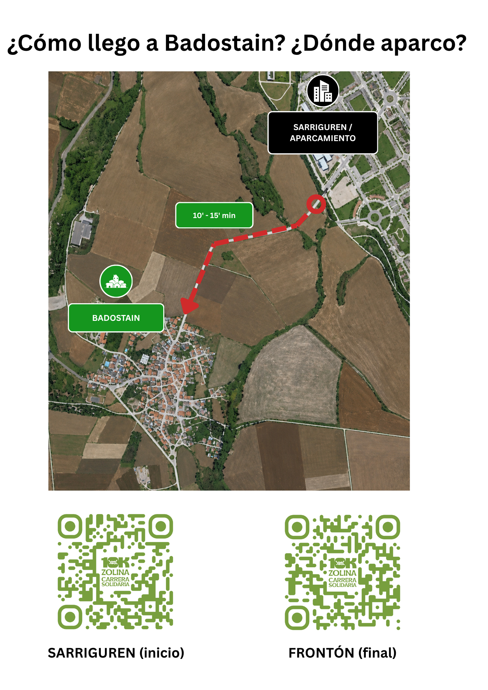

Carrera solidaria · Badostain · 24 de mayo
10K Zolina
Dorsales agotados. Consulta aquí los horarios, mapas de acceso, zona infantil, recogida de dorsales, consigna y servicios del día de la carrera.
Dorsales agotados. Consulta aquí los horarios, mapas de acceso, zona infantil, recogida de dorsales, consigna y servicios del día de la carrera.
Día del evento
Todo lo importante para llegar, aparcar, recoger el dorsal, ubicar los servicios y disfrutar de la jornada.
Aparca en Sarriguren y llega andando a Badostain. El paseo hasta el pueblo es de unos 10-15 minutos.
De 11:00 a 13:00 habrá zona infantil con hinchables para los txikis mientras corren los padres y madres.
Entrega de dorsales y consigna de 8:30 a 10:30 en la zona del frontón.
Horarios importantes

Aparcamiento recomendado en Sarriguren y acceso andando hasta Badostain.

Ubicación de la zona infantil para que los más pequeños se queden mientras corren los padres.

Dorsales, recogida de alimentos, salida/meta, ambulancia, WC, fuente, bar, podio y salida de emergencia.